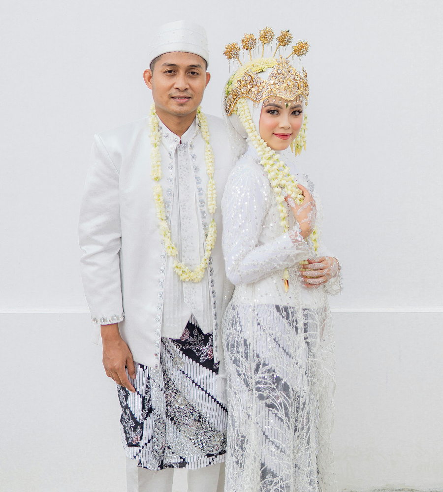

Rama & Shinta
Sabtu, 12 Desember 2026

"Membentuk keluarga yang sakinah, mawaddah, warahmah merupakan ibadah terpanjang. Atas asung kerahmanan Gusti Ingkang Moho Agung, kami bermaksud menyelenggarakan upacara pernikahan adat."
Raden Mas Raditya, S.H.
Putra dari Bapak K.R.T. Hardjodiningrat & Ibu Raden Ayu Sulastri
Asal: Kasunanan Surakarta Hadiningrat
kaliyan
Diajeng Shinta Pertiwi, M.B.A.
Putri dari Bapak Kolonel (Purn) H. Subroto & Ibu Hj. Siti Rahayu
Asal: Yogyakarta East Regency
Rundown Acara
Ijab Qobul / Akad
Pukul 08.00 WIB
Masjid Agung Kraton Ngayogyakarta
Resepsi & Panggih
Pukul 11.00 - 14.00 WIB
Pendopo Agung Sasana Mulya
Jl. Alun-Alun Selatan No. 9, Yogyakarta
00
Dinten
00
Jam
00
Menit
00
Detik
Serat Pangajeng-ajeng
Kirimkan donga pangestu dhumateng pinanganten kekalih